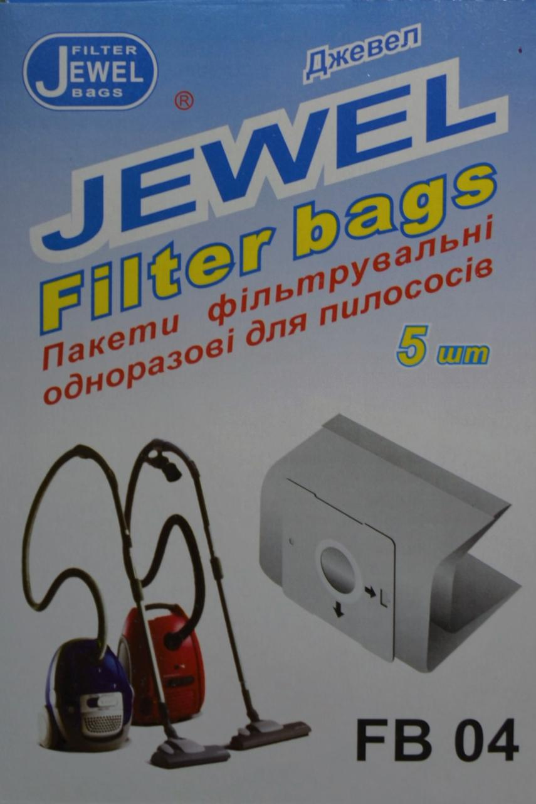
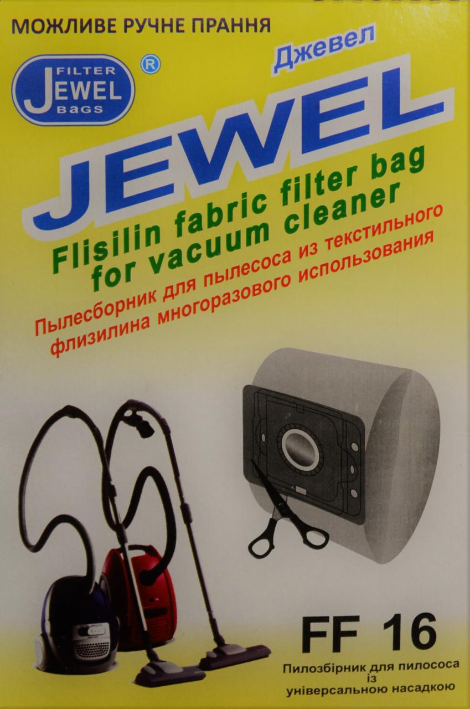
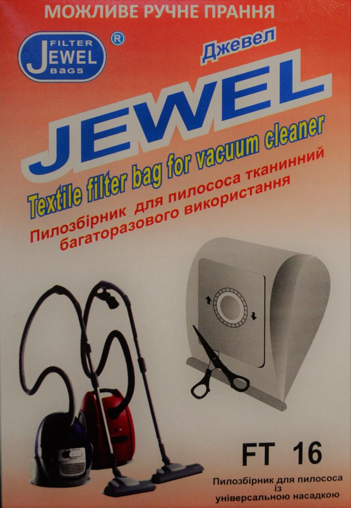
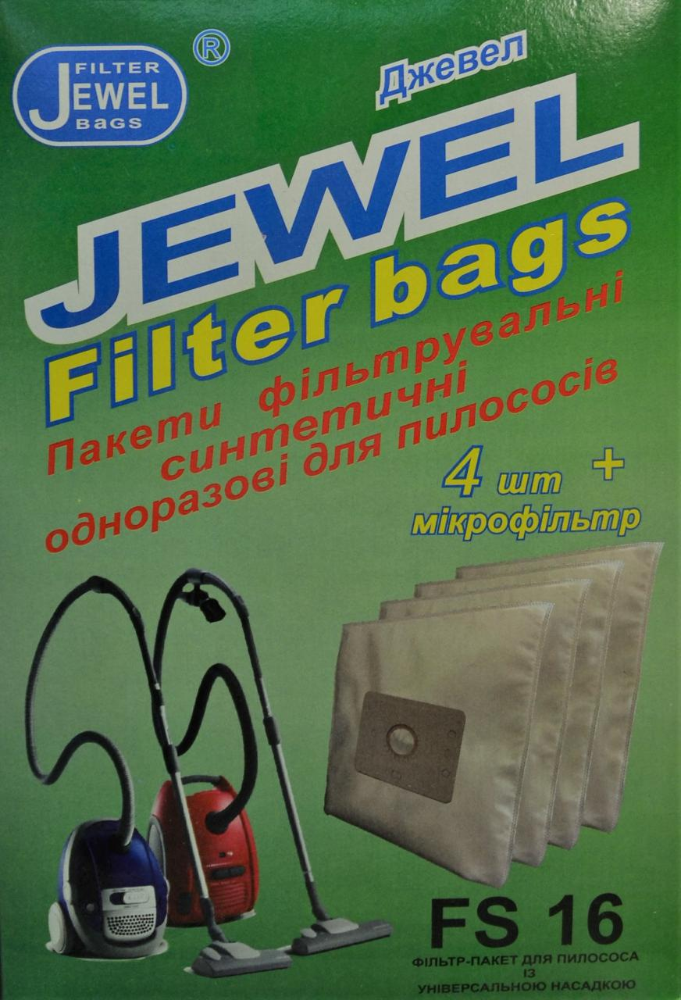

|  | Одноразовые пылесборники изготовлены из двухслойной сертифицированной фильтровальной бумаги и обеспечивают высокую степень очистки воздуха. Преимуществом одноразовых пылесборников является их удобство в использовании и высокая гигиеничность: их не надо вытряхивать - достаточно извлечь пылесборник из пылесоса и просто выбросить! Одноразовые фильтровальные пакеты маркируются индексом FB. |
Флизелиновые пылесборники изготовлены из двухслойного материала на флизилиновой основе. Текстильный флизелин – наиболее популярный среди производителей мешковых пылесосов материал для фильтрации. Благодаря своей структуре волокна текстильный флизелин обеспечивает равно как хорошую очистку, так и оптимальный баланс между силой всасывания и нагрузкой на двигатель пылесоса! Пылесборники из текстильного флизелина для многоразового использования маркируются индексом FF. |
 |
|  | Тканевые пылесборники изготовлены из сертифицированной фильтровальной ткани. Благодаря уникальной структуре волокна фильтровальный пакет отлично задерживает мелкие частицы, пыль и мусор, оставаясь при этом хорошо продуваемым! Содержание нейлона делает ткань прочной, а пылесборник долговечным. Мешки этого вида - многоразовые и их можно стирать. Пылесборники тканевые для многоразового использования маркируются индексом FT. |
Синтетические фильтровальные пакеты предназначены для одноразового использования. Эти пакеты изготовлены по специальной технологии и имеют 4 слоя с разной степенью фильтрации, что обеспечивает не только отличный уровень фильтрации, но и надежную защиту фильтр-пакета даже при попадании в него острых предметов! Объем данного пакета составляет 3,2 литра. Пылесборники синтетические одноразовые маркируются индексом FS. |
 |